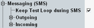

Messaging (SMS) Parameters
The "Messaging (SMS)" section configures parameters of the short message service (SMS). Sending an SMS message to the UE is triggered via hotkey, see "Signaling and Connection Control".
This section is not relevant for reduced signaling.

SMS parameters